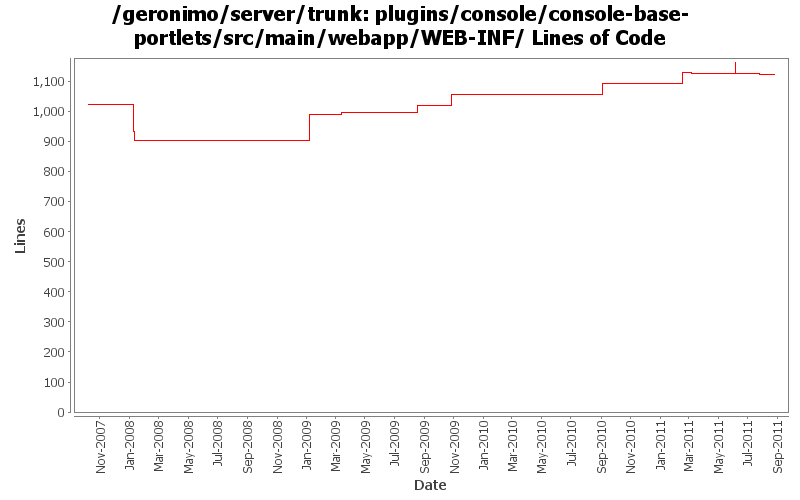

[root]/plugins/console/console-base-portlets/src/main/webapp/WEB-INF
 classes
(0 files, 0 lines)
classes
(0 files, 0 lines)
 view
(0 files, 0 lines)
view
(0 files, 0 lines)
 ajax
(0 files, 0 lines)
ajax
(0 files, 0 lines)
 apache
(0 files, 0 lines)
apache
(0 files, 0 lines)
 jk
(5 files, 378 lines)
jk
(5 files, 378 lines)
 artifact
(2 files, 132 lines)
artifact
(2 files, 132 lines)
 bundlemanager
(6 files, 896 lines)
bundlemanager
(6 files, 896 lines)
 ca
(13 files, 1255 lines)
ca
(13 files, 1255 lines)
 car
(0 files, 0 lines)
car
(0 files, 0 lines)
 configmanager
(3 files, 370 lines)
configmanager
(3 files, 370 lines)
 infomanager
(4 files, 483 lines)
infomanager
(4 files, 483 lines)
 keystore
(14 files, 1143 lines)
keystore
(14 files, 1143 lines)
 logmanager
(4 files, 291 lines)
logmanager
(4 files, 291 lines)
 realmwizard
(0 files, 0 lines)
realmwizard
(0 files, 0 lines)
 repository
(3 files, 293 lines)
repository
(3 files, 293 lines)
 securityrealmmanager
(0 files, 0 lines)
securityrealmmanager
(0 files, 0 lines)
 derby
(0 files, 0 lines)
derby
(0 files, 0 lines)
 groups
(3 files, 227 lines)
groups
(3 files, 227 lines)
 users
(3 files, 209 lines)
users
(3 files, 209 lines)
 se
(0 files, 0 lines)
se
(0 files, 0 lines)
 groups
(3 files, 264 lines)
groups
(3 files, 264 lines)
 users
(3 files, 230 lines)
users
(3 files, 230 lines)
 servermanager
(3 files, 95 lines)
servermanager
(3 files, 95 lines)
 threads
(2 files, 111 lines)
threads
(2 files, 111 lines)
 webaccesslogmanager
(2 files, 268 lines)
webaccesslogmanager
(2 files, 268 lines)
 webmanager
(2 files, 144 lines)
webmanager
(2 files, 144 lines)
 connector
(3 files, 304 lines)
connector
(3 files, 304 lines)
 welcome
(2 files, 148 lines)
welcome
(2 files, 148 lines)

| Author | Changes | Lines of Code | Lines per Change |
|---|---|---|---|
| Totals | 31 (100.0%) | 318 (100.0%) | 10.2 |
| dwoods | 2 (6.5%) | 87 (27.4%) | 43.5 |
| genspring | 4 (12.9%) | 74 (23.3%) | 18.5 |
| gawor | 5 (16.1%) | 60 (18.9%) | 12.0 |
| rwonly | 8 (25.8%) | 52 (16.4%) | 6.5 |
| djencks | 6 (19.4%) | 38 (11.9%) | 6.3 |
| xuhaihong | 2 (6.5%) | 7 (2.2%) | 3.5 |
| pmcmahan | 4 (12.9%) | 0 (0.0%) | 0.0 |
GERONIMO-6059 rename "J2EE Connectors" to "Java EE Connectors" in console.
1 lines of code changed in 1 file:
GERONIMO-6094 Some issues of confirm msg tld in admin console
4 lines of code changed in 1 file:
GERONIMO-6007 Upgrade woodstox version to 4.1.1
1 lines of code changed in 1 file:
this 2 files are wrongly checked-in at rev 1132672 (GERONIMO-5978)
0 lines of code changed in 2 files:
GERONIMO-5978 input nothing to list all packages
37 lines of code changed in 2 files:
GERONIMO-5847 Create pure html OSGi portlet
10 lines of code changed in 2 files:
GERONIMO-5769: A separate portlet for displaying web application bundles
2 lines of code changed in 1 file:
(somewhat) consistent application portlet naming, titles, icons and synch things between tomcat & jetty
5 lines of code changed in 1 file:
GERONIMO-5769 Web Application Bundles (WABs) do not show up in admin console
37 lines of code changed in 2 files:
GERONIMO-5571 Console support for EBA modules:list EBA modules,start EBA modules,stop EBA modules and uninstall EBA moules.
37 lines of code changed in 2 files:
update package name for PortletServlet
25 lines of code changed in 1 file:
GERONIMO-4658 Editor for artifact aliases. original patch from Victor Fang, with modifications. Merge from 2.2 with little attempt to fix problems
37 lines of code changed in 2 files:
Initial Japanese translation. Patch from Kan Ogawa (GERONIMO-4678)
24 lines of code changed in 1 file:
GERONIMO-4517 Apply unified message display style(G-4484) to javascript alert messages. Together with the localization of these messages. Thanks for the patch, Gang Yin
6 lines of code changed in 1 file:
GERONIMO-4484 Extraction, localization and display of messages generated in portlets. Applied common-message-base.patch and common-message-core.patch from Gang Yin, with some minor updates.
87 lines of code changed in 2 files:
GERONIMO-3732. Move the rest of deployment functionality out of console base and (mostly) into plugin-portlets. Revert the accidental menu name change for looking at web apps
0 lines of code changed in 2 files:
GERONIMO-3732 step 3 Move plugin and deployment pages into a console plugin
1 lines of code changed in 2 files:
updated titles of some portlets, hooked up help jsp for some debug portlets and updated the login jsp
4 lines of code changed in 1 file:
GERONIMO-3509 copy the new admin console and its plugins into the server project so they
can be built and released together.
also, merge recent improvements made to the old admin console into the new console:
revs 581420 580352 576651 574637 573719 573616
0 lines of code changed in 4 files: